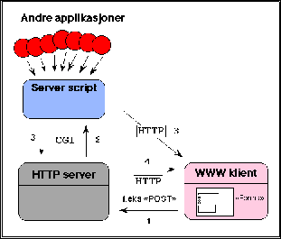

3 CGI - Common Gateway Interface


Neste: 3.1 Datakommunikasjonen i CGI
Opp: HTML fordypning
Forrige: 2.4 Pekere til annen
CGI -- Common Gateway Interface -- er en mekanisme som benyttes
aktivt i forbindelse med imagemaps og forms. Det er derfor nødvendig med
grunnleggende kjennskap til CGI før vi ser på imagemaps og forms.
CGI er en mekanisme som kan benyttes for å knytte vilkårlige
tredje parts applikasjoner til World Wide Web. Dette må gjøres
ved at det skrives en gateway, et såkalt CGI skript, som
fungerer som en dataskyfler mellom applikasjonen og
WWW klienten. Dvs. - oftest er det HTTP tjeneren som først
tar i mot returdata fra skriptet og så på vegne av skriptet
sender det til klienten.
Legg merke til at CGI definerer
grensesnittet mellom WWW klienten, HTTP tjeneren og skriptet, ikke mellom
tredje parts applikasjonen og skriptet!

Figur 6: CGI - Common Gateway Interface
Figur 6 viser skjematisk hvordan et HTTP server skript kan virke:
- Kommunikasjonen starter med at Web klienten, f.eks. Mosaic eller Netscape, aktiverer en
link som skal kalle opp et server skript. Dette kan foregå vha. en GET
eller POST HTTP melding.
- Denne beskjeden går til HTTP serveren som så står for selve oppstarten av
skriptet. Det kan hende brukeren har sendt med data fra Web klienten som skal til
skriptet. Dette vil serveren ta hånd om ihht. til CGI specen. Denne
beskriver hvordan
skriptet skal motta data fra serveren samt hvordan skriptet skal sende
data tilbake til serveren. Hvordan data kommuniseres mellom klient og server (skript),
er bla. avhengig av om det benyttes GET eller POST metode.
- Når skriptet blir kalt opp og får tilsendt data (dette kan skje i en
kombinasjon av kommandolinje-argumenter, environment variable og
standard input, se CGI specen), kan det hende en tredje applikasjon skal
involveres, slik figuren antyder. Det er i så fall skriptets oppgave å ta hånd
om all denne kommunikasjonen (kanskje med et databasesystem el.). Til
slutt må imidlertid skriptet sende data tilbake til HTTP serveren ihht. CGI
specen. Figuren antyder også at skriptet kan sende data direkte tilbake til
Web klienten, men denne muligheten skal vi foreløpig glemme. Man sparer et ledd
i kommunikasjonen hvis dette gjøres, men til gjengjeld blir skriptene noe mere
kompliserte siden de må skrive ut alle HTTP kontroll headere selv - dette gjøres
normalt av serveren. Slike skript omtales som NPH-skript (No Parsing of Headers).
- Når HTTP serveren får data tilbake fra skriptet, går dette automatisk videre
til Web klienten på en måte som er forståelig for denne.
Figuren finnes også i full størrelse her.
Neste: 3.1 Datakommunikasjonen i CGI
Opp: HTML fordypning
Forrige: 2.4 Pekere til annen
© Oslonett AS og Intervett AS, 03/05-95, 23:04:38
{kind=link}